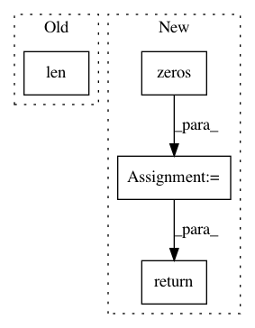

002a9d5d2b2c26fff63293e3007ede9ab7dee616,keras/layers/core.py,Merge,output_shape,#Merge#,333
Before Change
for i in self.dot_axes[1]:
shape2.pop(i)
shape = shape1 + shape2[1:]
if len(shape) == 1:
shape.append(1)
return tuple(shape)
elif self.mode == "cos":
After Change
dot_axes = []
for axes in self.dot_axes:
dot_axes.append([index-1 for index in axes])
tensordot_output = np.tensordot(np.zeros(tuple(shape1[1:])),
np.zeros(tuple(shape2[1:])),
axes=dot_axes)
if len(tensordot_output.shape) == 0:
shape = (1,)
else:
shape = tensordot_output.shape
return (shape1[0],) + shape
elif self.mode == "cos":
return tuple(input_shapes[0][0], 1)
def get_params(self):
In pattern: SUPERPATTERN
Frequency: 3
Non-data size: 4
Instances
Project Name: keras-team/keras
Commit Name: 002a9d5d2b2c26fff63293e3007ede9ab7dee616
Time: 2015-11-02
Author: makoto.matsuyama@gmx.com
File Name: keras/layers/core.py
Class Name: Merge
Method Name: output_shape
Project Name: asyml/texar
Commit Name: 77b1d527138ea2385284ed8eae8322c589065d3f
Time: 2018-04-26
Author: zhitinghu@gmail.com
File Name: texar/agents/seq_pg_agent.py
Class Name: SeqPGAgent
Method Name: _train_policy
Project Name: chainer/chainercv
Commit Name: 90b78b1379b3423aa3b4b5d0de7313f88bda23ab
Time: 2019-02-17
Author: yuyuniitani@gmail.com
File Name: chainercv/utils/mask/mask_to_bbox.py
Class Name:
Method Name: mask_to_bbox